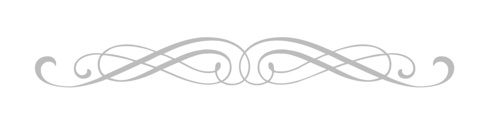

...історія одного побачення...
- Оксано Олексіївно?
- …ттттаакк.
- … (з ледь помітним подивом) добре, то де і о котрій?
- …(з помітним подивом) перепрошую?
- Побачення?... Але ж «так» було так на запрошення на побачення?!
- …ааааа, халепа, саме під враженням від фільму де головний герой вирішив приймати будь які пропозиції, звісно не кримінальні, рік поспіль…(витримавши певну паузу) -
Таааааккк, доообре, - «Так»! (обоє неначе зачудовано розходяться).
********
Саме щойно замовив книгу «Women, Fire, and Dangerous Things: What Categories Reveal About the Mind», George Lakoff, 1987, - «Жінки, Вогонь та Небезпечні речі: що категорії мови говорять про розум». У будь чого, про що ми можемо сказати, є достатнє розмаїття слів, щоб надати йому опис в усіх тонах: позитивних, негативних, нейтральних. Взяти хоча б слово трясця: впало щось на ногу – розпач – (швидко коротко на вибусі) трясця; хтось з «іхтамнєт» втрапив на концерт до кобзона - щастя та подив – (з протягом, як ото тягнеш задоволення, трошки не вірячи, неначе перепитуючи) - трЯяяяяясцяяааа.
Так ось, слова - це про «бути відкритою книгою» для тих, хто вміє її читати. Додайте поправки: на голос, його інтонацію та ритм; емоції, які ви не приховуєте; мову вашого тіла (яку дозволяєте тримати відстань між собою і кимось, поза, міміка обличчя). А ще щодо вас провели попереднє калібрування – принагідно, впродовж кількох місяців, у законний, звісно, спосіб, вам виказували непомітну увагу: у яких випадках, в якому оточенні, в яких емоційних станах, за яких інших умов які слова, реакції, поведінка, дії. Саме головне, що всі це й так роблять, але або вмотивовано (коли цілеспрямовано слідкують), або глибоко підсвідомо, не акцентуючись на деталях, в основному для адекватного втрапляння в загальну, прийнятну картинку, рамки.
Хіба що професійні пліткарі. Але, ті виключно енциклопедичні дані збирають щоб дати свідчення ментам «що, в який час і в якій послідовності відбулося», плюс надати останні дані соціології місцевого розливу щодо чиїхось морально - ділових якостей. Аналізом вони практично не займаються, бо головна задача збирати інформацію якнайпершими і якнайпершими розносити. Соціальна інженерія така, інформаційні широкосмугові ретранслятори. Майже розгалужена мережа дата-центрів, поєднаних стільниковим зв’язком між собою. Особливо упороті - олдскульні її представники, котрі довіряють лише особисто почутому від джерел з надійною репутацією – жодних тобі спокус щодо «зручностей» надбання сьогодення, з його найрізноманітнішими засобами комунікації.
Так ось, цікавлячись цим всім, поступово йдеш глибше. Поступово отримуєш досвід. Розуміння і володіння все більшим переліком різних сигналів, зчитаних одночасно, стає автоматичним, не вимагає зусиль та уваги, дозволяє помічати і вирізняти щось ще тонкіше, яке вказує на ще один новий інший аспект. В якийсь час помічаєш, що потік емоцій інших розумієш все деталізованіше, глибше, без напруження, без аналізу. Емоції, у всіх їхньому розмаїтті, просто відчуваєш, як їжу - на смак. Фактично, емоції і «на прийом» і «в ефір» стають мовою спілкування. З собі подібними можеш скільки завгодно довго спілкуватись без слів на одних лише «мигах». Навіть дійшов до того, що почав «внутрішні слухання за та проти» щодо гіпотези можливості існування такого явища як телепатія. Все що, можливо, необхідно – це лише ретельно «просканувати ефір» на наявність читабельних хвиль у більш короткому , чи не геть близькому до значень швидкості світла, діапазоні. Плюс відкривати якесь ще одне нове «Око» свого власного «всебачення». Спочатку дивом було б й просто почати чути той канал, потім вирізняти та ідентифікувати когось в тому морі. Але щоб спілкуватись – то напевно вже занадто, хоча й «колеться» помріяти.
Ще з часом усвідомлюєш, що твоя власна соціалізація, маючи такі фантастичні інструменти для її успішності, давно відповідає вимогам та стандартам мінімалізму – всі знають що ти є, і ти є коли потрібен. Вороги, хто ж без них, – лише з невідомих тобі причин вмотивовані особисто. Взаємини зі світом фактично в режимі “Stand By”, тобто «на запит». Ти не уникаєш нікого і нічого, не зникаєш. До того ж - аж цілих 8 годин ти між люди - на роботі, часи твоєї офіційної публічної експозиції. З часом навіть регочешся подумки від аналогії, що як ото римляни під час гулянь відходили від столу в сторону звільнитись від спожитого, так інколи й з емоціями те ж саме. Тобто справа лише в передозуванні. Від неприємних - нудить в інший спосіб.
Чим далі, тим більша втома. Хоча б якийсь перепочинок, а інколи навіть голод та спрагу, може дати відчути лише Самотність. Тому й стає порятунком. Хоча працюєш над тим, щоб вчитись блокувати певні хвилі навколо, ставати «прозорим» та інертним щодо реакції на них, та до взаємодії з ними. Та все ж, життя як і у всіх – гойдалки: зліти та падіння чергуються, дотримуючись певного ритму. Ти не чарівник, не дивак, не під софітами. Ти наскільки опанував «справу», що люди навіть не помічають, що, як зазвичай, їм з тобою легко, приємно, комфортно. Справа залагоджена так, що в інших не виникає тривоги, що не дай боже не добудуться тебе, як трапиться потреба.
Виказуєш себе хіба що в моменти, коли, як мала дитина, захоплено слухаєш як хтось «читає/викриває» когось на назагал, описуючи його дії як гру, наводить аргументи як доказ своїй прозорливості. А інколи спиною біжить такий тонкий холодок, неначе щось не на своєму місці, і лякаєшся, що тобі просто не дають «читати». Бо не може жива людина бути такою тихою емоційно. А ти так давно й так на повну перемкнувся на емоції, як на абсолютно надійне, повне, відкрите джерело інформації для розуміння «хто то за один», так довго опираєшся на них як на абсолют, що губишся - з чого ж раніше збирав той відповідний внутрішній образ для «бути ефективним та адекватним» у взаєминах.
********
- Вітаю, приємно бачити, вже не за офіційних обставин.
- Дякую, навзаєм…
…а ви знаєте, що для жінки дві години часу на роздуми – це як пристойна напружена партія в шахи. Коли прораховуєш свій кожен наступний хід та можливі відповіді суперника щонайменше на 5 ходів в глибину, залежно від небезпеки. Від першого ходу до останнього. А ще ж на фоні взаємодія з навколишнім світом, побут, рутина.
- Це ж не через запрошення на побачення?
- Уявіть.
- Але ж сподіваюсь що якщо, по-перше, здивувались, то, по-друге, приємно?
- ….(ледь замріяно, неначе на хвильку поринаючи в спогади, з легкою невпевненістю, дещо стишено і протяжно) - Таааак, (через ще одну, коротку вже паузу, чітко, коротко, впевнено, хіба що дещо неначе крадькома посміхнувшись, аби не виказати себе) – Так.
(Йдуть поволі, якийсь час у тиші, вдають що все так й має бути. Але ж кожен зайнятий тим, про що почув, та, паралельно, «прораховує» своє наперед).
То рішення вже остаточне, що оте, з чим сьогодні звертались та так дотепно з нього перевели на запрошення на побачення, кане в літу? (каже ото так трохи нахиливши на бік голову з здійнятими догори бровками та одночасно підкинутим вгору на хвильку підборіддям, коли тому, кого приперли до стіночки, пропонують щиросердно викласти все як є, маючи на увазі «то звідки оте відчуття безсмертя, нахабства та безкарності, щоб бути таким борзим?»), - чи таки саме з цим дійсно і приходили? (і, «зробивши свій хід на шахівниці, вдаривши по годиннику», передала хід, відкинувшись у крісло, очікуючи на відповідь).
- Так.
- І яке ж з них?
- Якщо ділове спілкування під час роботи можна умовно вважати бліц-побаченнями, то обидва так є другим так, прямо чи опосередковано. Хоча б й, наприклад, в тому числі.
- Але ж…. Я…. я не помічала…. (розгублено очима в пошуках бігає в різні боки, щось пригадуючи, неначе намагається вхопити щось, що тікає, вислизає з уваги).
- Але ж я неначе ввесь час був на межі викриття. Щоразу неначе змагання Амурів по влучності з стрільби, під сотнею софітів, а моє серце – їх мішень, одна, єдина на них всіх. І кожна влучна стріла це як +1000 до напису на табло на лобі – «Викрито - Закоханий».
- (зупиняється, ловить поглядом погляд, як на дивоглядках вдивляється уважно в очі, і, як ото шукаючи когось в натовпі знаходять і привертають до себе увагу піднятою рукою а потім кілька коротких кивків головою «це я, я тебе знайшов, бачиш мене?») – але ж як я не помічала?…
- Напевно інші, більш значні та важливі партії не давали можливості підняти голову та роззирнутися довкола.
- Напевно що так. Нова робота, нові завдання, нове оточення. Скільки партій одночасно. Ще й деякі з них, як з’ясовується, ось з таким додатковим, прихованим, замаскованим наміром (останнє речення промовляє акцентовано з легкою іронією).
- До речі, то це зараз вже друга партія за цей день триває? А який рахунок першої, і за ким нова?
********
Зазвичай люди мріють емоціями. У них, з певних причин, з’являється бажання чогось. І, чим сильніше це бажання, тим частіше вони «купаються» в приємних емоціях, уявляючи мрію втіленою.
Коли ж ти емпат – ти мрієш відчувати конкретну, чітку емоцію - чесно, не в уяві. Для тебе, за великим рахунком, немає різниці емоція уявна, «програна на замовлення», справжня. Відчуваються вони однаково.
Що має значення – знати, що вона твоя, з’являється в тобі, йде з тебе.
Бачити, нарешті, самого себе, знати хто ти та який ти.
Давати себе цьому світу.
Народжуватися.
Жити.
Щирість – найбільший скарб у взаєминах.
Найжиттєдайніше джерело вашого внутрішнього світла.
********
- Чиє зверху, питаєш? Хто виграє?
- Так.
- Було б добре, аби кохання…
Але з всього видно, що захист, бо напад геть щось йде вперед, аби виключно швидше здатись в полон.
- Та який то напад, так, диверсійна група, кинута спеціально на пізнє виявлення, щоб реакцією на себе засвітити слабкі місця захисту. Але ж з якою любов’ю та заради якого кохання та її самопожертва.
********
Беруться за руки й так йдуть далі. Він вже певний час «шукав» її руки, вона ж не могла дочекатись коли він нарешті вже зважиться.
У щирому коханні - всі ми білі та пухнасті емпати в тій чи іншій мірі.
Та закоханий емпат – та пристрасть, якої ви будете прагнути знову і знову, відчувши її на смак хоча б один лише раз..
Красно дякую Helena Vishnevska за дозвіл використати малюнок як ілюстрацію до оповідання.